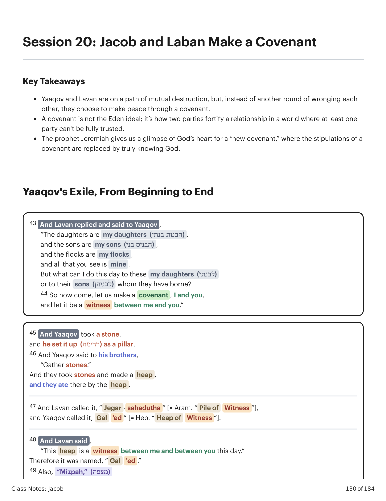
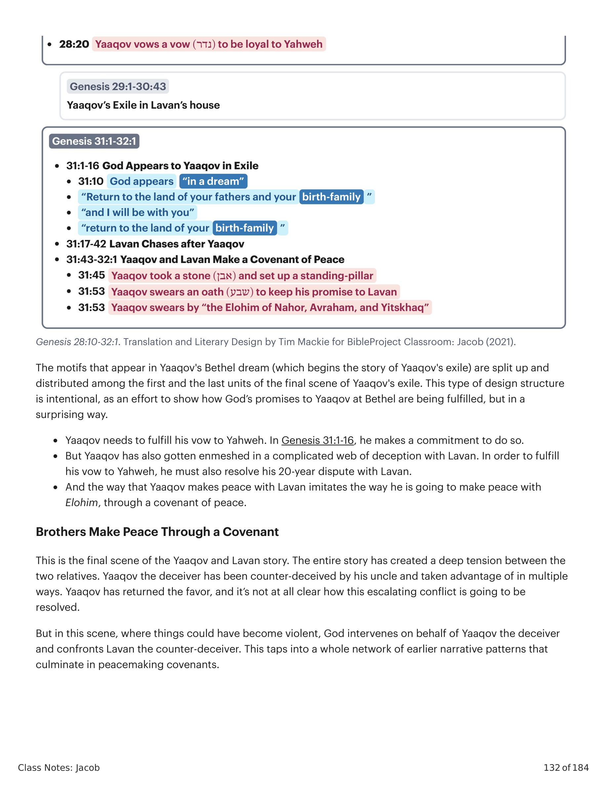

43 E Lavan respondeu e disse a Yaaqov: "As filhas são minhas filhas, e os filhos são meus filhos, e os rebanhos são meus rebanhos, e tudo o que vês é meu. Mas que posso eu fazer hoje a estas minhas filhas, ou aos filhos que elas têm dado à luz? 44 Vem, pois, agora, façamos uma aliança, eu e tu, e sirva de testemunha entre mim e ti." 45 E tomou Yaaqov uma pedra, e a erigiu como coluna. 46 E disse Yaaqov a seus irmãos: "Ajuntai pedras." E tomaram pedras, e fizeram um montão, e comeram ali junto ao montão. 47 E Lavan chamou-lhe "Jegar-Saaduta" [= aram. "Montão de Testemunha"], e Yaaqov chamou-lhe "Galeede" [= heb. "Montão de Testemunha"]. 48 E disse Lavan: "Este montão é testemunha entre mim e entre ti hoje." Portanto foi chamado "Galeede". 49 Também "Mizpá" [= "Torre de Vigia"], porque disse: "Yahweh vigie entre mim e entre ti, quando cada um se esconder do seu companheiro. 50 Se tu oprimires minhas filhas, ou se tomares mulheres além de minhas filhas, nenhum homem está conosco; vê, Elohim é testemunha entre mim e ti." 51 E disse Lavan a Yaaqov: "Eis este montão, e eis a coluna que tenho levantado entre mim e entre ti. 52 Este montão é testemunha, e a coluna é testemunha, de que não passarei deste montão para ti, nem tu passarás deste montão e desta coluna para me fazeres mal. 53 O Elohim de Abraão e o Elohim de Naor, o Elohim de seu pai, julguem entre nós." E jurou Yaaqov pelo temor de seu pai Isaque. 54 E ofereceu Yaaqov sacrifício na montanha, e chamou seus irmãos para comerem pão; e comeram pão, e passaram a noite na montanha. 32:1 E levantou-se Lavan pela manhã, e beijou a seus filhos e a suas filhas, e os abençoou; e Lavan se foi, e voltou para o seu lugar.43 And Lavan replied and said to Yaaqov, "The daughters are my daughters, and the sons are my sons, and the flocks are my flocks, and all that you see is mine. But what can I do this day to these my daughters or to their sons whom they have borne? 44 So now come, let us make a covenant, I and you, and let it be a witness between me and you." 45 And Yaaqov took a stone, and he set it up as a pillar. 46 And Yaaqov said to his brothers, "Gather stones." And they took stones and made a heap, and they ate there by the heap. 47 And Lavan called it, "Jegar-sahadutha" [= Aram. "Pile of Witness"], and Yaaqov called it, "Gal'ed" [= Heb. "Heap of Witness"]. 48 And Lavan said, "This heap is a witness between me and between you this day." Therefore it was named, "Gal'ed." 49 Also, "Mizpah," for he said, "May Yahweh watch between me and between you, when each man hides from his companion. 50 If you oppress my daughters, or if you take wives besides my daughters, no man is with us, see, Elohim is witness between me and you." 51 And Lavan said to Yaaqov, "Behold this heap, and behold the pillar which I have thrown between me and between you. 52 This heap is a witness, and the pillar is a witness, that I will not pass over to you by this heap, nor will you pass over to me by this heap, to do evil. 53 The Elohim of Abraham, and the Elohim of Nahor, the Elohim of their father, may they judge between us." And Yaaqov swore an oath by the fear of his father Isaac. 54 And Yaaqov offered a sacrifice on the mountain, and called his brothers to eat bread, and they ate bread, and they spent the night on the mountain. 32:1 And Lavan rose early in the morning, and he kissed his sons and his daughters and blessed them. And Lavan departed and returned to his place.

Gênesis 31:43-32:1. Tradução e Design Literário por Tim Mackie para BibleProject Classroom: Jacó (2021).Genesis 31:43-32:1. Translation and Literary Design by Tim Mackie for BibleProject Classroom: Jacob (2021).
Esta cena, que conclui o exílio de Yaaqov na casa de Lavan, foi desenhada para criar uma moldura literária em torno de todo o movimento do exílio. Os motivos que aparecem no sonho de Betel de Yaaqov (que inicia a história do exílio) são divididos e distribuídos entre as primeiras e as últimas unidades da cena final do exílio de Yaaqov. Este tipo de estrutura de design é intencional, como um esforço para mostrar como as promessas de Deus a Yaaqov em Betel estão sendo cumpridas, mas de um modo surpreendente. Yaaqov precisa cumprir seu voto a Yahweh. Em Gênesis 31:1-16, ele faz um compromisso de fazê-lo. Mas Yaaqov também se enredou em uma teia complicada de engano com Lavan. Para cumprir seu voto a Yahweh, ele deve também resolver sua disputa de 20 anos com Lavan. E o modo como Yaaqov faz a paz com Lavan imita o modo como ele vai fazer a paz com Elohim, através de uma aliança de paz.This scene, which concludes Yaaqov's exile in Lavan's house, has been designed to create a literary frame around the entire exile movement. The motifs that appear in Yaaqov's Bethel dream (which begins the story of Yaaqov's exile) are split up and distributed among the first and the last units of the final scene of Yaaqov's exile. This type of design structure is intentional, as an effort to show how God's promises to Yaaqov at Bethel are being fulfilled, but in a surprising way. Yaaqov needs to fulfill his vow to Yahweh. In Genesis 31:1-16, he makes a commitment to do so. But Yaaqov has also gotten enmeshed in a complicated web of deception with Lavan. In order to fulfill his vow to Yahweh, he must also resolve his 20-year dispute with Lavan. And the way that Yaaqov makes peace with Lavan imitates the way he is going to make peace with Elohim, through a covenant of peace.
Gênesis 28:10-32:1. Tradução e Design Literário por Tim Mackie para BibleProject Classroom: Jacó (2021).Genesis 28:10-32:1. Translation and Literary Design by Tim Mackie for BibleProject Classroom: Jacob (2021).

Gênesis 28:10-32:1. Tradução e Design Literário por Tim Mackie para BibleProject Classroom: Jacó (2021).Genesis 28:10-32:1. Translation and Literary Design by Tim Mackie for BibleProject Classroom: Jacob (2021).
Esta é a cena final da história de Yaaqov e Lavan. Toda a história criou uma tensão profunda entre os dois parentes. Yaaqov, o enganador, foi contra-enganado por seu tio e aproveitado de múltiplas formas. Yaaqov retribuiu a gentileza, e não está nada claro como este conflito crescente será resolvido. Mas nesta cena, onde as coisas poderiam ter se tornado violentas, Deus intervém em favor de Yaaqov, o enganador, e confronta Lavan, o contra-enganador. Isto toca em toda uma rede de padrões narrativos anteriores que culminam em alianças de pacificação.This is the final scene of the Yaaqov and Lavan story. The entire story has created a deep tension between the two relatives. Yaaqov the deceiver has been counter-deceived by his uncle and taken advantage of in multiple ways. Yaaqov has returned the favor, and it's not at all clear how this escalating conflict is going to be resolved. But in this scene, where things could have become violent, God intervenes on behalf of Yaaqov the deceiver and confronts Lavan the counter-deceiver. This taps into a whole network of earlier narrative patterns that culminate in peacemaking covenants.
| Rivalidade entre IrmãosSibling Rivalry | Conflito EscalanteEscalating Conflict | Des-criação Violenta / Re-criação por AliançaViolent De-creation / Re-creation Through Covenant |
|---|---|---|
| Caim e AbelCaim e Abel | Violência 7x10 de LemekViolência 7x10 de Lemek | Gen. 9:11-15 Dilúvio de juízo / Aliança de paz — “Nunca mais as águas se tornarão dilúvio para destruir toda carne.”Gen. 9:11-15 Dilúvio de juízo / Aliança de paz — “Nunca mais as águas se tornarão dilúvio para destruir toda carne.” |
| Sara e AgarSara e Agar | Hostilidade de Sara e exílio de AgarHostilidade de Sara e exílio de Agar | Gen. 17:10-14 Juízo sobre os genitais de Abraão / Aliança de paz — circuncidar todo macho como sinal da aliança.Gen. 17:10-14 Juízo sobre os genitais de Abraão / Aliança de paz — circuncidar todo macho como sinal da aliança. |
| Abraão e AbimelequeAbraão e Abimeleque | Disputa por um poçoDisputa por um poço | Gen. 21:27-32 Animais sacrificados / Aliança de paz — Berseba (“ppoço dos sete”).Gen. 21:27-32 Animais sacrificados / Aliança de paz — Berseba (“ppoço dos sete”). |
| Yitskhaq e AbimelequeYitskhaq e Abimeleque | Disputas por muitos poçosDisputas por muitos poços | Gen. 26:28-31 Aliança de paz — “Não fareis mal a nós, como não vos tocamos…”Gen. 26:28-31 Aliança de paz — “Não fareis mal a nós, como não vos tocamos…” |
| Sibling Rivalry and Covenant Peace. Created by Tim Mackie for BibleProject Classroom: Jacob (2021).Sibling Rivalry and Covenant Peace. Created by Tim Mackie for BibleProject Classroom: Jacob (2021). | ||
| Rivalidade entre IrmãosSibling Rivalry | Conflito EscalanteEscalating Conflict | Des-criação Violenta / Re-criação por AliançaViolent De-creation / Re-creation Through Covenant |
|---|---|---|
| “Agora tu és o abençoado por Yahweh.” E fizeram um banquete, comeram e beberam. Levantaram de manhã e juraram, cada um com seu irmão, e Yitskhaq os despediu em paz.“Agora tu és o abençoado por Yahweh.” E fizeram um banquete, comeram e beberam. Levantaram de manhã e juraram, cada um com seu irmão, e Yitskhaq os despediu em paz. | ||
| Yaaqov e LavanYaaqov e Lavan | Enganos e contra-enganosEnganos e contra-enganos | Gen. 31:44, 52-54 Aliança de paz — “Vem, cortemos uma aliança, eu e tu…” Yaaqov jurou pelo temor de seu pai Yitskhaq.Gen. 31:44, 52-54 Aliança de paz — “Vem, cortemos uma aliança, eu e tu…” Yaaqov jurou pelo temor de seu pai Yitskhaq. |
| Sibling Rivalry and Covenant Peace. Created by Tim Mackie for BibleProject Classroom: Jacob (2021).Sibling Rivalry and Covenant Peace. Created by Tim Mackie for BibleProject Classroom: Jacob (2021). | ||
Estes padrões em desenvolvimento estabelecem a importância da aliança, um meio formal de tratar do conflito para que a paz possa ser iniciada. Em cada um destes casos, o conflito começa entre rivais. Ou o escolhido ou o não-escolhido inicia um ciclo de conflito que cresce e só é levado ao fim através da celebração de uma aliança. Toda a cena de fazer aliança com Lavan parece tão improvável que cria esperança para o leitor. Talvez o conflito não resolvido de Yaaqov com Esaú também possa ser sarado de modo semelhante à sua rivalidade com Lavan.These developing patterns establish the importance of the covenant, a formal means of addressing conflict so that peace can be initiated. In each of these cases, the conflict begins between rivals. Either the chosen or the non-chosen begins a cycle of conflict that escalates and is only brought to an end through the making of a covenant. The entire covenant-making scene with Lavan seems so unlikely that it creates hope for the reader. Perhaps Yaaqov's unresolved conflict with Esau can also be healed in a similar way to his rivalry with Lavan.
Qual é o propósito de uma aliança?What is the purpose of a covenant?